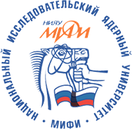

Участники
Московский государственный университет имени М.В.
Ломоносоваодин из старейших[4][5] и крупнейших[6][7] классических университетов
России, один из центров отечественной науки и культуры. C 1940 года носит имя Михаила
Ломоносова, полное наименование — Федеральное государственное бюджетное образовательное
учреждение высшего образования «Московский государственный университет имени М. В. Ломоносова»,
широко используется аббревиатура «МГУ».
Московский физико-технический институт (государственный
университет) – неофициально Физтех — один из ведущих[2] российских вузов, готовящий
специалистов в области теоретической и прикладной физики, математики и смежных дисциплин.
Расположен в городе Долгопрудном Московской области, однако отдельные корпуса и факультеты
находятся в Жуковском и в Москве. Один из 29 национальных исследовательских университетов.
Отличительной чертой учебного процесса в МФТИ является так называемая «система Физтеха»,
нацеленная на подготовку учёных и инженеров для работы в новейших областях науки. Большинство[3]
студентов обучается по направлению «Прикладные математика и физика». В настоящее время также
готовятся специалисты по направлениям «Системный анализ и управление», «Информатика и
вычислительная техника», «Компьютерная безопасность». В 2009 году открылось направление
«Прикладные математика и информатика».
С 2011 по 2016 год МФТИ занимает второе место среди вузов России по среднему баллу ЕГЭ у
зачисленных на первый курс, уступая по этому показателю только МГИМО[4]. В 2014 году от
агентства «Эксперт РА» МФТИ получил рейтинговый класс «В», означающий «очень высокий» уровень
подготовки выпускников, уступив лишь МГУ[5].
В мае 2016 года МФТИ вошёл в топ-100 самых престижных вузов мира по версии британского журнала
Times Higher Education[6][7].

Национальный исследовательский ядерный университет «МИФИ» –
один из первых двух национальных исследовательских университетов России (наряду с МИСиС),
образован 8 апреля 2009 года на базе Московского инженерно-физического института
(государственного университета)[1].
Историю ведёт от основанного в 1942 году Московского механического института боеприпасов (ММИБ).
Занятия начались 1 января 1943 года. Первый адрес института — улица Кирова (сейчас Мясницкая),
21. Первым директором института стал Алексей Никитович Дыгерн. Первоначальной целью института
ставилась подготовка специалистов для военных и атомных программ Советского Союза. В 1945 году
переименован в Московский механический институт, а в 1953 году — в Московский
инженерно-физический институт (МИФИ). С 1993 года — Московский государственный
инженерно-физический институт (технический университет). С 2003 года — Московский
инженерно-физический институт (государственный университет). В 2009 году университет стал одним
из победителей федерального конкурса на статус национального исследовательского университета и
был переименован в Национальный исследовательский ядерный университет «МИФИ».
На территории университета находится научно-исследовательский ядерный реактор бассейнового типа
(англ.)русск.. Университет имеет тесные связи с Государственной корпорацией по атомной энергии
«Росатом» и Международным агентством по атомной энергии. НИЯУ МИФИ служит площадкой для
проведения всевозможных событий в мире науки. Ежегодно в вузе проводится научная сессия МИФИ.
При поддержке партнёра вуза в области высоких технологий — корпорации Intel — начиная с 1997
года НИЯУ МИФИ открывает двери школьным талантам, организуя молодёжный конкурс «Юниор»,
включённый в структуру международного научно-инженерного конкурса Intel International Science
and Engineering Fair.
Московский государственный технический университет им. Н. Э.
Ба́умана(полное название Федеральное государственное бюджетное образовательное
учреждение высшего образования «Московский государственный технический университет имени Н. Э.
Баумана (национальный исследовательский университет)»[5], также известен как Бауманка,
Бауманский, МГТУ, МВТУ) — российский национальный исследовательский университет, научный центр,
особо ценный объект культурного наследия народов России[6][7][8].
Предыдущее название университета «Московское высшее техническое училище им. Н. Э. Баумана»[9]
было присвоено ему в честь революционера Николая Эрнестовича Баумана, убитого в 1905 году
недалеко от главного здания в то время — Императорского московского технического училища.